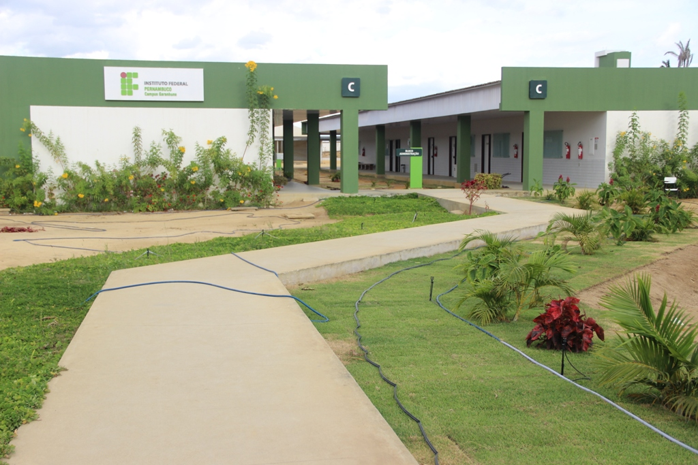

Esta aplicação tem por objetivo, auxiliar os possíveis candidatos e determinar em qual dos cursos do IFPE - Campus Garanhuns nos cursos técnicos ele mais se encaixa. Ao responder o questionário, no final você saberá sua afinidade com um dos cursos e poderá ver a página do mesmo.
Cursos Técnicos ofertados pelo IFPE - Campus Garanhuns :